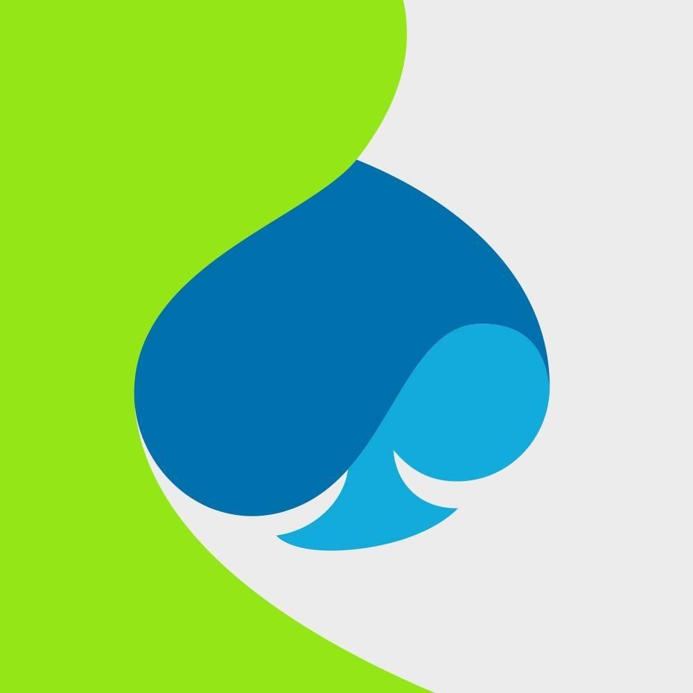

September 2026
New Position at Principled Intelligence!
Rome, Italy
Started a new position as Senior AI Engineer at Principled Intelligence.
# Scroll to show info. def get_info(ro: RiccardoOrlando) -> str: return ro.basic_info() print(get_info(riccardo))
// Scroll to show info. public String getInfo(RiccardoOrlando ro) { return ro.basicInfo(); } System.out.println(getInfo(riccardo));
$ Riccardo Orlando Senior AI Engineer @ Principled Intelligence, Rome → github scholar cv
About
Hi, I'm Riccardo Orlando, Computer Scientist and AI Researcher. I build language technology that works at scale: from multilingual semantic pipelines to large language models trained from scratch.
Currently
Senior AI Engineer at Principled Intelligence, in Rome.
Started a new position as Senior AI Engineer at Principled Intelligence.
Started a new position as AI Researcher at DIME AI.
Public release of the Minerva 7B (base and instruct) model.
Public release of the code and models for ReLiK, our system for Entity Linking and Relation Extraction.
Our paper "ReLiK: Retrieve and LinK, Fast and Accurate Entity Linking and Relation Extraction on an Academic Budget" has been accepted at ACL 2024.
Public release of the Minerva models (350M, 1B, 3B), the first family of Large Language Models (LLMs) trained from scratch on Italian (and English) data.

Built ZeroHungerAI's LLM extraction system from the ground up: training data, models, evaluation benchmark, and the inference setup that runs it across 150 million news articles. Also built the retrieval and agentic parts of ImpactAI's meta-analysis pipeline, plus the RCT benchmark used to evaluate retrieval, and got it into production.
PhD in Natural Language Processing and Deep Learning at the Sapienza NLP group of Sapienza University of Rome.
Thesis title: An automatic approach to produce multilingual training data for Semantic Role Labelling.
Grade: 110/110 with honours

Included in a team that worked to re-platform a series of internal applications of an insurance company. Worked as a software engineer mainly on the backend but also contributed to the frontend.
Thesis title: Densest subgraph in Fork/Join.
A "just few lines of code" utility for fine-tuning (not only) Llama models.
A Word Level Transformer layer based on PyTorch and 🤗 Transformers.
A template to initialize PyTorch projects that use PyTorch Lightning as a backbone framework.
Simple multilingual NER model serving using Docker, FastAPI, ONNX and Multilingual Mini-LM.
Reimplementation of a BERT based model (Shi et al, 2019), currently the state-of-the-art for English SRL. Also implements predicate disambiguation.
Chinese Word Segmentation based on BERT, implemented in PyTorch for state-of-the-art Chinese word segmentation.
Three classifiers trained to distinguish malware applications from non-malware ones and recognize the family they belong to.
Bachelor's thesis. A Fork/Join parallel algorithm for the densest subgraph problem.
Solver that uses the Fork/Join framework to solve Sudoku in parallel, made during a multi-core programming course.